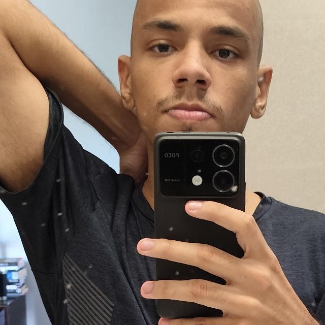

When I dedicate myself to something, I can't stop until I finish.
I love philosophy and reading; literature is one of my great passions—so much so that studying it is one of my hobbies.
I am currently pursuing a degree in Information Systems at Faesa.
I have already completed high school at the Adventist School in Vitória, Espírito Santo.
I am also taking a Full Stack Web Development course on Udemy, alongside a game development course from Denki Code.
Unfortunately, I don't have any—even though I've worked on personal projects in my private GitHub repository.